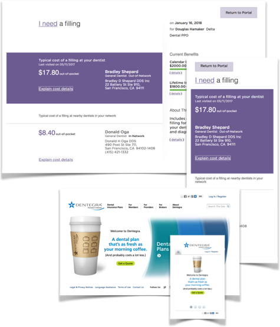

Responsive Design
Problem:
Given increasing mobile traffic, growing customer expectations for mobile access, new of user agents and devices, and rapidly evolving display and input modes.
Solution:

Implemented the W3C’s “One Web” vision within our Accessibility Policy. Created a standards-based web framework around semantic markup and progressive enhancement techniques, including Responsive Design for mobile accessibility. And evangelized Web Standards Principles, Accessibility, and HTML5 standards and best practices across the organization.
Result:
The accessible site launched in 2008 was “mobile-friendly” when Google introduced mobile factors in rankings. A government client was delighted in 2010 when we delivered a responsive site as a ‘mobile accessibility’ feature. We won executive funding and launched our first responsive full corporate site in 2014. And, our internal development teams adopted ‘responsive’ for new applications development in 2016.